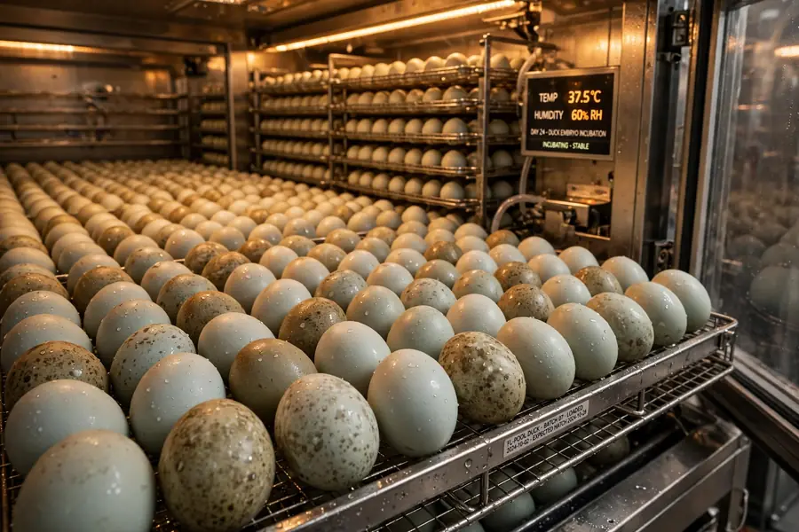
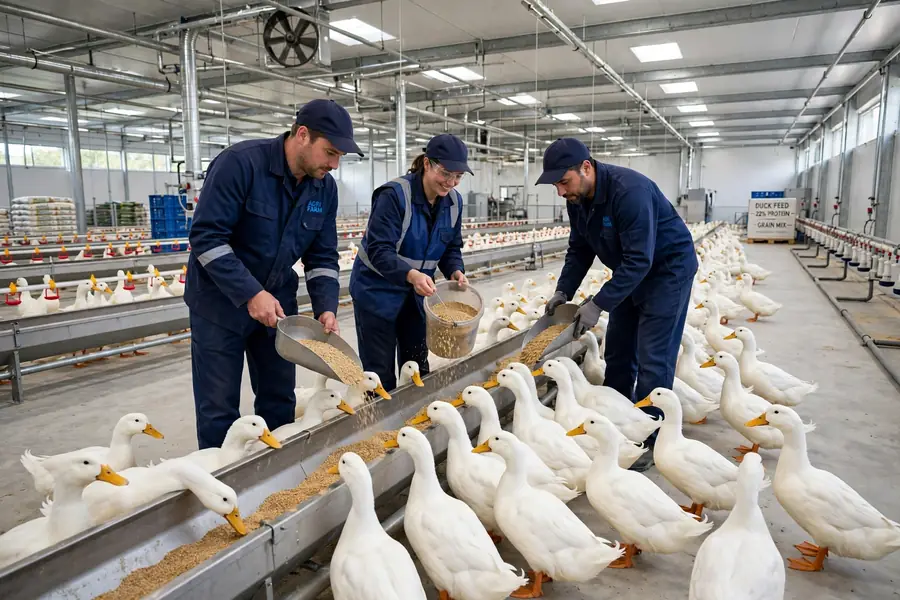
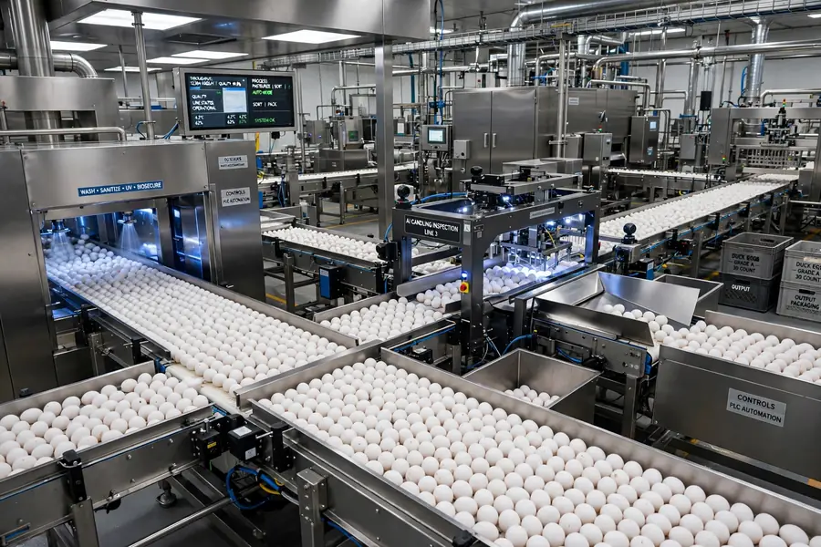
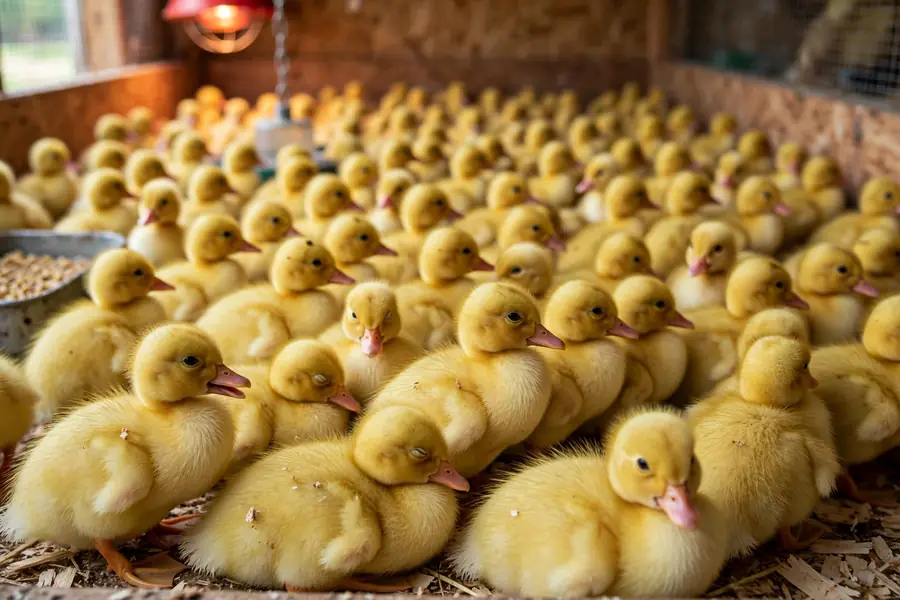

10-Stage Pipeline
Our Operations —
10 Stages
End-to-end control from headquarters to export — every stage documented and audited.

01 · Global Headquarters
Corporate hub coordinating multinational agro operations across 5 continents.

02 · Breeding Ponds
Large-scale clean water breeding with biosecure circulation and welfare monitoring.

03 · Hatchery Incubation
Advanced incubation with precise temperature and humidity control for 99.98% viability.

04 · Daily Care
Expert nutrition programs and veterinary oversight for optimal growth cycles.

05 · Egg Collection
Automated 99.98% QC system ensuring premium grade collection and sorting.

06 · Solar Farms
Eco-efficient renewable infrastructure powering hatcheries and processing.

07 · Ducklings Brooder
Next generation brooding units with climate-controlled early stage development.

08 · Growth Ponds
Free-range growth systems supporting thousands of ducks in natural environments.

09 · Export Logistics
Air cargo & cold-chain containers delivering to partners across 144 countries.

10 · World Map - 144 Network
144 countries network of farms, partners and investors enabling global scale.